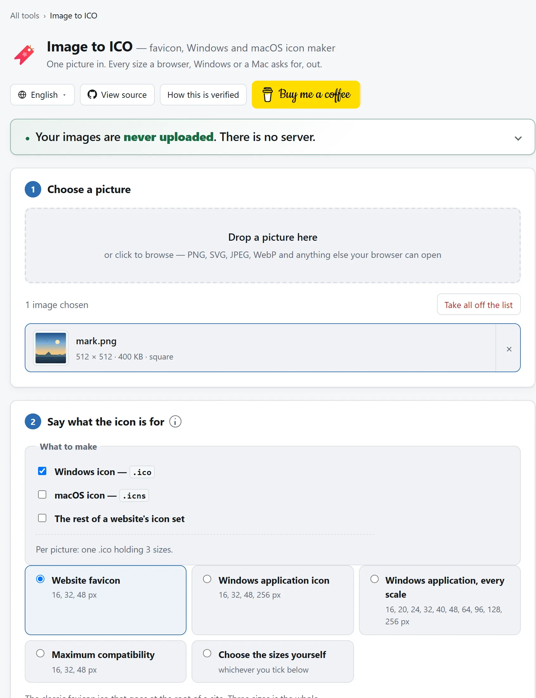
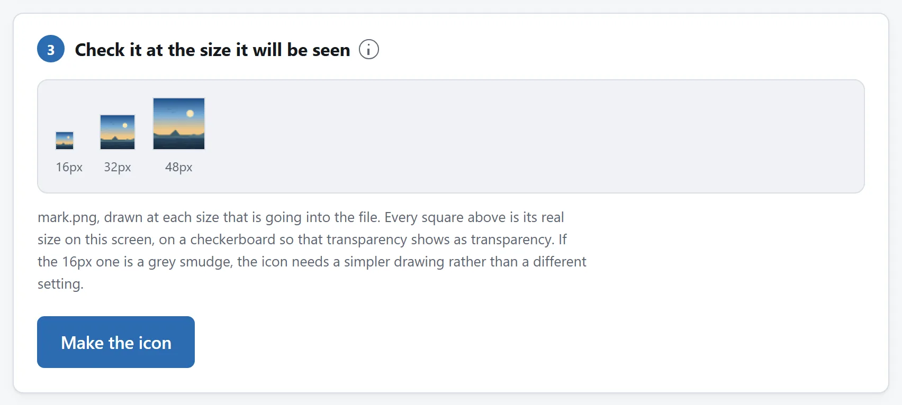

先说结论
打开图片转 ICO，丢一张至少 256 像素的方图进去，预设保持网站图标，下载 favicon.ico。把它放在站点根目录，让 https://yoursite.com/favicon.ico 这个地址能应答。不管你的 HTML 里提没提它，每个浏览器都会去要这个地址，所以严格来说，别的什么都不用做。
下面讲的，是“技术上有这个图标”和“这个图标看得清”之间的差距：里面该装哪些尺寸、iPhone 和安卓另外要什么，以及你的 logo 缩到十六像素宽撑不住时该怎么办。
新网站、换品牌和桌面工具
网站也要存到主屏幕。从网站图标预设开始，包含网站套件。查看 16 像素预览，解包并读提供的 HTML 和 manifest，再加入现有设置。已有 manifest 就合并图标条目，不覆盖名称、起始地址等设置。分别测浏览器标签图标和主屏幕快捷方式。
桌面工具或内部快捷方式。ICO 用 Windows 应用或高 DPI 预设，目标要求 ICNS 就选 macOS 图标。来源符号简单，尺寸足够最大输出，在目标系统打开结果再分发。工具只做图标文件，不生成安装程序或光标。
为什么是一组尺寸，而不是一张图
.ico 是个容器。里面装着同一样东西在不同尺寸下的好几张完整的图，读它的那个东西挑离自己需要最近的那一张。
听着像冗余，其实不是。一个要按十六像素画你图标的浏览器有两条路：读一张你亲手画的十六像素版本，或者当场把一张更大的缩下去。第二条更差，而且差得看得见，一个细节丰富的 logo 自动缩小之后就是一团糊，而一张你亲眼看过的十六像素版本，你至少有机会把它简化。这个格式装好几个尺寸的全部意义，就是给你这个机会。
网站的惯例是三个尺寸，每个都有来由：
- 16×16，浏览器标签页、地址栏、书签菜单。这是人们真正看到的那一个。四个里你只保得住一个，就保它。
- 32×32，书签栏、指向你网站的 Windows 桌面快捷方式，以及高分屏上的多数浏览器，它们是拿 32 缩下去画标签页图标的。
- 48×48，Google 在搜索结果里读站点图标用的尺寸，也是 Windows 的中等图标视图。
比这更大的，该以 PNG 的形式放在 .ico 旁边，而不是塞进它里面，为什么，下面讲手机那几个文件时会说。

十六像素这道坎
这一段没人会提前告诉你。十六像素在普通屏幕上大约四毫米，一共 256 个点，比这句话里的字还少。凡是为招牌、名片或者网站页头设计的东西，缩到这个尺寸几乎没有能活下来的。
按先后顺序，消失的是这些：
- 文字。一个文字标塞进方块里，高度大约三个像素。它不会变成小字，它会变成一道灰杠。所以几乎每个既有符号又有名字的公司，网站图标都只用那个符号；而没有符号的，就用单独一个字母。
- 细线。一个 512 像素 logo 上的一像素描边，到十六像素时是三十二分之一个像素。它会渲染成边上一层淡淡的灰雾，或者干脆消失。
- 渐变和阴影。根本没有过渡的余地。一层柔和的投影会变成一圈脏边。
- 细节里的细节。一个“写着字的文档”图标，会变成一个方框加一团污渍。
解决办法不是某个设置，是另画一张：一个简化的标记，一两个形状，高对比，除了单个字符不要文字。有意识地按 32 或者 48 像素去画这一版，拿它当源图。
工具能做的，是在你发布之前把问题摆给你看。图片转 ICO 里的预览，每个尺寸都按屏幕上的真实大小画出来，而这是判断这件事唯一的办法。一个十六像素的图标显示成六十四像素，看着都挺好，什么都说明不了。

logo 不是方的，该留白还是该裁？
图标永远是方的，而多数 logo 不是，所以总得动点手脚。三种答案，好坏不等。
留白把整张图留住，上下垫空。这是稳妥的默认选项，对一个横长的文字标却是错的：一个宽是高三倍的东西放进方块里，只占到三分之一的高度，在十六像素下，就是五个像素的 logo 加十一个像素的空。
裁中间取正中最大的那个方块。对一个组合标，也就是符号旁边跟着公司名的那种，这一刀往往两边都切着。更好的办法是自己先把源图裁到只剩那个符号，再拿去转。
拉伸把画面挤成方的。几乎没有哪种情况下它是对的，之所以还提供，主要是为了让工具不至于一声不吭就替你这么干。
横长 logo 的通用答案是：别拿整个 logo 去转。拿它身上单独拎出来也立得住的那一块去转。
透明还是纯色底？
网站图标一般该用透明。浏览器标签栏因浏览器和主题不同，可能是灰的、白的或者近黑的，而一个透明图标在哪一种上都待得住。一个把白底画进去的图标，在深色标签栏里就是一个白方块。
有两个例外值得知道：
- 纯深色、别的什么都没有的 logo，在深色模式下会消失。你的标记本来就是白底黑图的话，给它配个彩色底，而不是透明底，或者加一圈浅色描边。
- Apple touch icon 必须不透明。iOS 会把它画在自己那个圆角磁贴上，透明会被渲染成黑色。凡是能生成这个文件的工具，都该替你把它压平，这里的这个会，默认压到白色上。
一个网站需要的、.ico 之外的那些文件
favicon.ico 管得了浏览器和 Windows，管不了手机，而多数自己动手做的图标套件，就停在这儿了。另外三个平台各要各的文件，各有各的名字，而且它们谁都不会去看 .ico 里面：
- iOS 在有人把你的站添加到主屏时，读 180×180 的
apple-touch-icon.png。没有它，iOS 就拿页面截图顶上，看着像出了什么岔子。 - 安卓和各种安装提示读的是 Web 应用 manifest，也就是
site.webmanifest，它指向 192 和 512 像素的 PNG。那个 512 也是 Web 应用启动画面上显示的那张。 - Windows 开始菜单磁贴读
browserconfig.xml，它指向一张 150×150 的 PNG。三者里最不要紧的一个，也就四行 XML。
还有一个特别容易做错：安卓的启动器会把自适应图标裁成手机喜欢的形状，圆形、方圆形、圆角方形都有可能，而只有画面中间那 80% 是保证留得住的。一张画得顶到边的图标会被削掉四角。所谓 maskable 图标就是这么回事：同一张图，有意识地在方块里画小一圈，并在 manifest 里单独声明。
在图片转 ICO 里勾上网站套件，这些、manifest，还有指向它们的那段 HTML，全都给你。那段 HTML 里有一样是故意不写的：favicon.ico 的 <link>。浏览器本来就会自己去要那个地址，再写一遍，等于同一个文件被取两次。
Windows 应用图标是另一套尺寸
图标要是给程序用而不是给网站用，尺寸就变了。Visual Studio 自带那个默认 app.ico 里装的是 16、32、48 和 256，也就是三个外壳尺寸，加上开始菜单和资源管理器超大图标视图要用的那个大的。
高分屏下 Windows 还会要 20、24、40、64 和 96，缺了就拿最接近的尺寸重采样。这要不要紧，取决于你的图标：形状扁平的挺得过重采样，细节多的挺不过。把它们加上，文件大约翻一倍，而对一个应用来说这根本不算什么。这笔账跟网站图标完全是两回事，网站图标是每个访客都要取一次的。
关于体积还有一点：字节都压在那个 256 的条目上。不压缩存，它自己就 264 KB；在图标里按 PNG 存，通常不到 30。PNG 条目从 Windows Vista 起就读得了，所以不用它的唯一理由，是软件真的比那还老，或者是某个自己解析图标的安装程序、嵌入式工具。
Mac 读的完全是另一个文件
图标要是给 Mac 应用而不是 Windows 应用用的，上面那些一条都不适用：macOS 根本不读 .ico。它读 .icns，换了个壳的同一个思路，一个容器里装好几个尺寸，有三点不同值得知道。
- 尺寸是定死的。苹果公开的就是十个槽位，没什么可挑：16、32、64、128、256、512 和 1024 像素，其中 32、256 和 512 各出现两次，因为它们既是自己那一档，又是下一档的 Retina 版本。
- 它一直做到 1024。
.ico到 256 就封顶了，所以一个 Mac 图标文件动辄几百 KB，而一个网站图标只有十几 KB。对一个只发布一次的应用，这不算什么；只有网站图标才是每个访客都要取的。 - 1024 像素是你的图稿必须扛得住的尺寸。这两个问题是同一张图的两端：网站图标得在极小时还能用，Mac 图标得在极大时还立得住。一个按 512 导出、再吹到 1024 的 logo，在 Retina 屏上发糊，App Store 也不收。
怎么用：应用包把它放在 YourApp.app/Contents/Resources/，并在 Info.plist 里写上名字。给文件夹或者磁盘映像换图标，就在访达里选中那个 .icns，按 Command-C，然后对着要换的东西“显示简介”，点左上角那个小图标，按 Command-V。
在图片转 ICO 里勾上 macOS 图标就能出一个，旁边要不要 Windows 那个文件随你。两个平台都发的东西，两个文件都要，而且它们是同一趟里、从同一张图画出来的。
检查它到底生效了没有
浏览器缓存网站图标的劲头比缓存别的什么都大，所以“我传上去了，可什么都没变”，通常是缓存的事，不是你做错了。重新去改文件之前，先试两件事：
- 直接打开
https://yoursite.com/favicon.ico。文件能下下来，说明它在那儿，你看到的是缓存。要是 404，那就是没放在根目录。 - 用无痕窗口打开你的站，那里通常有自己独立的图标缓存。
在 Windows 上，把 .ico 放进一个文件夹，然后在资源管理器里切换视图大小：小、中、大、超大分别从同一个文件里取不同的条目来画，于是每一张你都能按系统实际显示的样子看到。
在 Mac 上，.icns 用预览打开，侧边会把每个槽位都列出来。访达里也有同样的招：把它丢进一个文件夹，拖动视图选项里那个尺寸滑块，就能看着它在里面那几张图之间切换。
这些事一样都不用上传
缩放一张图，浏览器干了很多年了；而一个 .ico 无非是六个字节的文件头、每张图十六个字节的条目，然后就是那些图。做它的过程里没有哪一步需要服务器，这里的工具也确实没用：页面的 Content-Security-Policy 把它可能联的地址全列了出来，没有一个是本站的。
这件事在这儿比在别处更值得在意。交给免费网站图标生成器的那个 logo，相当多的时候属于还没发布的品牌，图标往往是最早做出来的东西之一，也是最晚公布的东西之一。与其听我们说，不如把页面打开，拔掉网线，照做一个试试。把文件传给在线转换器安全吗？里还有另外三个检查，用在任何工具上都管用。